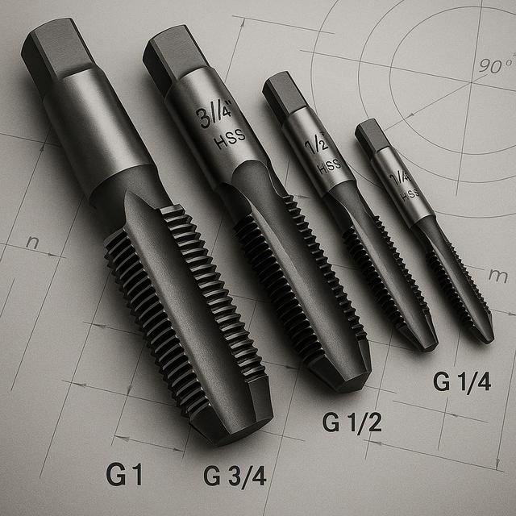

Мітчики G(Тр),К,RC(Ктр)Метчики G(Тр),К,RC(Ктр)
Мітчик Rc 1\8 исп. 1 Китай (Сестрорецк) Р6М5 хорошего качестваМетчик Rc 1\8 исп. 1 Китай (Сестрорецк) Р6М5 хорошего качества
ОписОписание
Мітчик Rc 1\8 исп. 1 Китай (Сестрорецк) Р6М5 хорошего качества — професійний металорізальний інструмент для нарізання внутрішньої метричної різьби в отворах. Основні параметри: різьба Rc 1/8. Виготовлено з матеріалу швидкорізальна сталь Р6М5, що забезпечує стійкість різальної кромки при обробці конструкційних і легованих сталей, чавуну та кольорових металів. Виробник: Сестрорецк. Інструмент перевірений і готовий до відвантаження. В наявності 989 шт. на складі у Харкові. Ціна 165 грн без ПДВ. Опт і роздріб, відправлення по всій Україні. Замовлення від 2 000 грн.Метчик Rc 1\8 исп. 1 Китай (Сестрорецк) Р6М5 хорошего качества — профессиональный металлорежущий инструмент для нарезания внутренней метрической резьбы в отверстиях. Основные параметры: резьба Rc 1/8. Изготовлен из материала быстрорежущая сталь Р6М5, что обеспечивает стойкость режущей кромки при обработке конструкционных и легированных сталей, чугуна и цветных металлов. Производитель: Сестрорецк. Инструмент проверен и готов к отгрузке. В наличии 989 шт. на складе в Харькове. Цена 165 грн без НДС. Опт и розница, отправка по всей Украине. Заказ от 2 000 грн.
ХарактеристикиХарактеристики
| Тип інструментуТип инструмента | МітчикМетчик |
|---|---|
| КатегоріяКатегория | Мітчики G(Тр),К,RC(Ктр)Метчики G(Тр),К,RC(Ктр) |
| РізьбаРезьба | Rc 1/8Rc 1/8 |
| МатеріалМатериал | Р6М5Р6М5 |
| Напрямок різьбиНаправление резьбы | праваправая |
| ВиконанняИсполнение | 11 |
| ВиробникПроизводитель | СестрорецкСестрорецк |
| КраїнаСтрана | КитайКитай |
| СтанСостояние | новийновый |
| Код товаруКод товара | FLK-02232FLK-02232 |
| НаявністьНаличие | 989 шт.989 шт. |